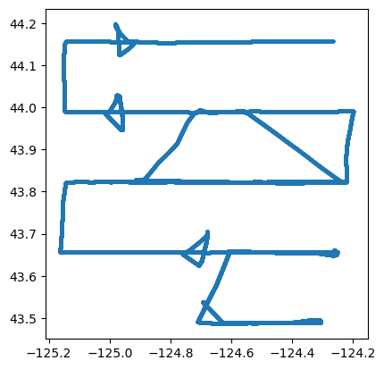
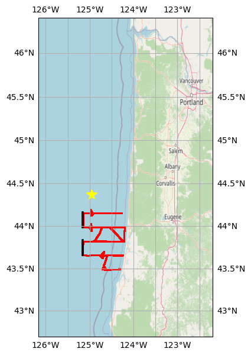
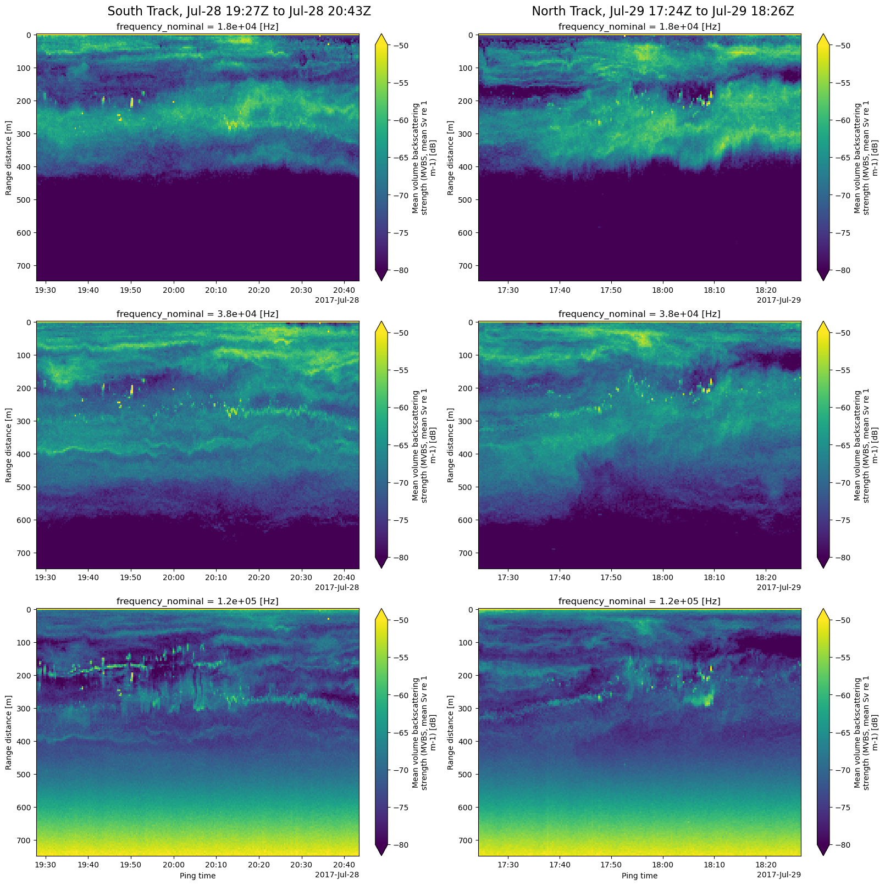

from pathlib import Path
import fsspec
import numpy as np
import geopandas as gpd
import xarray as xr
import matplotlib.pyplot as plt
from shapely.geometry import box
import cartopy.crs as ccrs
import cartopy.io.img_tiles as cimgt
from cartopy.mpl.gridliner import LONGITUDE_FORMATTER, LATITUDE_FORMATTER
import echopype as ep
from echopype.qc import exist_reversed_time
import warnings
warnings.simplefilter("ignore", category=DeprecationWarning)Exploring ship echosounder data from the Pacific Hake survey
Jupyter notebook accompanying the manuscript:
Echopype: A Python library for interoperable and scalable processing of ocean sonar data for biological information
Authors: Wu-Jung Lee, Emilio Mayorga, Landung Setiawan, Kavin Nguyen, Imran Majeed, Valentina Staneva
Introduction
Goals
- Illustrate a common workflow for echosounder data conversion, calibration and use. This workflow leverages the standardization applied by echopype and the power, ease of use and familiarity of libraries in the scientific Python ecosystem.
- Extract and visualize data with relative ease using geospatial and temporal filters.
Description
This notebook uses EK60 echosounder data collected during the 2017 Joint U.S.-Canada Integrated Ecosystem and Pacific Hake Acoustic Trawl Survey (‘Pacific Hake Survey’) to illustrate a common workflow for data conversion, calibration and analysis using echopype and core scientific Python software packages, particularly xarray, GeoPandas, pandas and NumPy.
Two days of cloud-hosted .raw data files are accessed by echopype directly from an Amazon Web Services (AWS) S3 “bucket” maintained by the NOAA NCEI Water-Column Sonar Data Archive. The total data used are 170 .raw files at approximately 25 MB each (1 Hz pinging rate from first light to dusk), corresponding to approximately 4.2 GB. With echopype, each file is converted to a standardized representation based on the SONAR-netCDF4 v1.0 convention and saved to the cloud-optimized Zarr format.
Data stored in the netCDF-based SONAR-netCDF4 convention can be conveniently and intuitively manipulated with xarray in combination with related scientific Python packages. Mean Volume Backscattering Strength (MVBS) is computed with echopype from each raw data file and exported to a netCDF file. Here, we define two geographical bounding boxes encompassing two ship tracks and use these to extract corresponding timestamp intervals from the GPS data, and then the corresponding MVBS data based on those intervals. Finally, these extracted MVBS subsets are plotted as track echograms.
Outline
- Establish AWS S3 file system connection and generate list of target EK60
.rawfiles - Process S3-hosted raw files with
echopype: convert, calibrate and export to standardized files - Extract and process GPS locations from the
Platformgroup of converted raw files - Read MVBS and plot track echograms for time periods corresponding to two ship tracks
Running the notebook
This notebook can be run with a conda environment created using the conda environment file https://github.com/OSOceanAcoustics/echopype-examples/blob/main/binder/environment.yml. The notebook creates two directories, if not already present: ./exports/hakesurvey_convertedzarr and ./exports/hakesurvey_calibratednc. netCDF and Zarr files will be exported there.
Note
We encourage importing echopype as ep for consistency.
from dask.distributed import Clientclient = Client()clientClient
Client-0457e919-0407-11ef-80d7-820f588673e5
| Connection method: Cluster object | Cluster type: distributed.LocalCluster |
| Dashboard: /user/leewujung/proxy/8787/status |
Cluster Info
LocalCluster
5abba2b3
| Dashboard: /user/leewujung/proxy/8787/status | Workers: 4 |
| Total threads: 8 | Total memory: 31.34 GiB |
| Status: running | Using processes: True |
Scheduler Info
Scheduler
Scheduler-b7dda29b-c5bc-4ea7-ab66-7890b5e5cc79
| Comm: tcp://127.0.0.1:38903 | Workers: 4 |
| Dashboard: /user/leewujung/proxy/8787/status | Total threads: 8 |
| Started: Just now | Total memory: 31.34 GiB |
Workers
Worker: 0
| Comm: tcp://127.0.0.1:43205 | Total threads: 2 |
| Dashboard: /user/leewujung/proxy/43023/status | Memory: 7.84 GiB |
| Nanny: tcp://127.0.0.1:40977 | |
| Local directory: /tmp/dask-scratch-space/worker-8hk9umex | |
Worker: 1
| Comm: tcp://127.0.0.1:33021 | Total threads: 2 |
| Dashboard: /user/leewujung/proxy/33901/status | Memory: 7.84 GiB |
| Nanny: tcp://127.0.0.1:43227 | |
| Local directory: /tmp/dask-scratch-space/worker-rtm3hewa | |
Worker: 2
| Comm: tcp://127.0.0.1:36503 | Total threads: 2 |
| Dashboard: /user/leewujung/proxy/34185/status | Memory: 7.84 GiB |
| Nanny: tcp://127.0.0.1:42299 | |
| Local directory: /tmp/dask-scratch-space/worker-sq1_hzly | |
Worker: 3
| Comm: tcp://127.0.0.1:32945 | Total threads: 2 |
| Dashboard: /user/leewujung/proxy/38863/status | Memory: 7.84 GiB |
| Nanny: tcp://127.0.0.1:38595 | |
| Local directory: /tmp/dask-scratch-space/worker-ewwsz9bc | |
Establish AWS S3 file system connection and generate list of target EK60 .raw files
Access and inspect the publicly accessible NCEI WCSD S3 bucket on the AWS cloud as if it were a local file system. This will be done through the Python fsspec file system and bytes storage interface. We will use fsspec.filesystem.glob (fs.glob) to generate a list of all EK60 .raw data files in the bucket, then filter on file names for target dates of interest.
The directory path on the ncei-wcsd-archive S3 bucket is s3://ncei-wcsd-archive/data/raw/Bell_M._Shimada/SH1707/EK60/. All .raw files from the 2017 Hake survey cruise are found here.
fs = fsspec.filesystem('s3', anon=True)
bucket = "ncei-wcsd-archive"
rawdirpath = "data/raw/Bell_M._Shimada/SH1707/EK60"s3rawfiles = fs.glob(f"{bucket}/{rawdirpath}/*.raw")
# print out the last two S3 raw file paths in the list
s3rawfiles[-2:]['ncei-wcsd-archive/data/raw/Bell_M._Shimada/SH1707/EK60/Summer2017-D20170913-T180733.raw',
'ncei-wcsd-archive/data/raw/Bell_M._Shimada/SH1707/EK60/Winter2017-D20170615-T002629.raw']Generate list of target EK60 .raw files from AWS S3 bucket based on dates. The dates are found in the middle string token (e.g., “D20170913”). Select files from 2 days, 2017-07-28 and 2017-07-29.
s3rawfiles = [
s3path for s3path in s3rawfiles
if any([f"D2017{datestr}" in s3path for datestr in ['0728', '0729']])
]
print(f"There are {len(s3rawfiles)} target raw files available")There are 170 target raw files availableProcess S3-hosted raw files with echopype: convert, calibrate and export to standardized files
Loop through all the selected raw files on S3 and convert, calibrate and generate Mean Volume Backscattering Strength (MVBS). Save the raw converted and MVBS data to local files, as zarr and netCDF, respectively.
def populate_metadata(ed, raw_fname):
"""
Manually populate into the "ed" EchoData object
additional metadata about the dataset and the platform
"""
# -- SONAR-netCDF4 Top-level Group attributes
survey_name = (
"2017 Joint U.S.-Canada Integrated Ecosystem and "
"Pacific Hake Acoustic Trawl Survey ('Pacific Hake Survey')"
)
ed['Top-level'].attrs['title'] = f"{survey_name}, file {raw_fname}"
ed['Top-level'].attrs['summary'] = (
f"EK60 raw file {raw_fname} from the {survey_name}, converted to a SONAR-netCDF4 file using echopype."
"Information about the survey program is available at "
"https://www.fisheries.noaa.gov/west-coast/science-data/"
"joint-us-canada-integrated-ecosystem-and-pacific-hake-acoustic-trawl-survey"
)
# -- SONAR-netCDF4 Platform Group attributes
# Per SONAR-netCDF4, for platform_type see https://vocab.ices.dk/?ref=311
ed['Platform'].attrs['platform_type'] = "Research vessel"
ed['Platform'].attrs['platform_name'] = "Bell M. Shimada" # A NOAA ship
ed['Platform'].attrs['platform_code_ICES'] = "315"Create the directories where the exported files will be saved, if these directories don’t already exist.
base_dpath = Path('./exports/notebook2')
base_dpath.mkdir(exist_ok=True, parents=True)
converted_dpath = Path(base_dpath / 'hakesurvey_convertedzarr')
converted_dpath.mkdir(exist_ok=True)
calibrated_dpath = (base_dpath / 'hakesurvey_calibratednc')
calibrated_dpath.mkdir(exist_ok=True)echopype processing
EchoData is an echopype object for conveniently handling raw converted data from either raw instrument files or previously converted and standardized raw netCDF4 and Zarr files. It is essentially a container for multiple xarray.Dataset objects, each corresponds to one of the netCDF4 groups specified in the SONAR-netCDF4 convention – the convention followed by echopype. The EchoData object can be used to conveniently accesse and explore the echosounder raw data and for calibration and other processing.
The cell below contains the main echopype workflow steps. For each raw file: - Access file directly from S3 via ep.open_raw to create a converted EchoData object in memory - Add global and platform attributes to EchoData object - Export to a local Zarr dataset (a collection of files encapsulated in a directory) - Generate calibrated Sv and then MVBS from the raw data in the EchoData object - Export MVBS to a local netcdf file
Note: Depending on your internet speed, this cell may take some time to run (potentially 20-30 mins).
# %%time
# for s3rawfpath in s3rawfiles:
# raw_fpath = Path(s3rawfpath)
# try:
# # Access file directly from S3 to create a converted EchoData object in memory
# ed = ep.open_raw(
# f"s3://{s3rawfpath}",
# sonar_model='EK60',
# storage_options={'anon': True}
# )
# # Manually populate additional metadata about the dataset and the platform
# populate_metadata(ed, raw_fpath.name)
# # Save to converted Zarr format
# ed.to_zarr(save_path=converted_dpath, overwrite=True)
# # Use the EchoData object "ed" to generate calibrated and
# # computed MVBS files that will be saved to netcdf
# ds_Sv = ep.calibrate.compute_Sv(ed)
# ds_MVBS = ep.commongrid.compute_MVBS(
# ds_Sv,
# range_meter_bin=5, # in meters
# ping_time_bin='20s' # in seconds
# )
# ds_MVBS.to_netcdf(calibrated_dpath / f"MVBS_{raw_fpath.stem}.nc")
# except Exception as e:
# print(f"Failed to process raw file {raw_fpath.name}: {e}")Test for time reversals
Small time reversals are found in EK60 datasets, including the 2017 Pacific Hake survey, where the ping_time (or GPS time1) value may be lower (older) than the preceding ping_time by a second. Such discontinuities can interfere with concatenating individual raw files to produce an aggregated dataset. The capability to identify and address these reversals is in the echopype.qc subpackage.
%%time
for datapath in converted_dpath.glob('*'):
ed = ep.open_converted(datapath, chunks={})
# Test for a negative ping_time increment in sequential timestamps, in the Sonar/Beam_group1 group
if exist_reversed_time(ds=ed['Sonar/Beam_group1'], time_name="ping_time"):
print(f"Reversed time in {datapath}")CPU times: user 19.7 s, sys: 6.21 s, total: 25.9 s
Wall time: 2min 9sThere are no time reversals in this two-day dataset, fortunately.
Examine the EchoData object for one of the data files
echopype provides a user-friendly, convenient representation of an EchoData object that leverages the user-friendly xarray Dataset HTML representation. Since an EchoData object is effectively a container for multiple xarray.Dataset objects corresponding to netCDF4 groups, the notebook “print out” provides a summary view of all the groups and interactive access to summaries of each group.
Here, ed is the last object opened in the time reversal test, in the preceding cell.
ed = ep.open_converted(list(converted_dpath.glob('*'))[0], chunks={})edEchoData: standardized raw data from /home/jovyan/shared/echopype-examples/notebooks/exports/notebook2/hakesurvey_convertedzarr/Summer2017-D20170729-T235813.zarr
-
<xarray.Dataset> Dimensions: () Data variables: *empty* Attributes: conventions: CF-1.7, SONAR-netCDF4-1.0, ACDD-1.3 date_created: 2017-07-29T23:58:13Z keywords: EK60 processing_level: Level 1A processing_level_url: https://echopype.readthedocs.io/en/stable/pr... sonar_convention_authority: ICES sonar_convention_name: SONAR-netCDF4 sonar_convention_version: 1.0 summary: EK60 raw file Summer2017-D20170729-T235813.r... title: 2017 Joint U.S.-Canada Integrated Ecosystem ... -
<xarray.Dataset> Dimensions: (channel: 3, time1: 534) Coordinates: * channel (channel) <U37 'GPT 18 kHz 009072058c8d 1-1 ES18... * time1 (time1) datetime64[ns] 2017-07-29T23:58:13.128697... Data variables: absorption_indicative (channel, time1) float64 dask.array<chunksize=(3, 534), meta=np.ndarray> frequency_nominal (channel) float64 dask.array<chunksize=(3,), meta=np.ndarray> sound_speed_indicative (channel, time1) float64 dask.array<chunksize=(3, 534), meta=np.ndarray> -
<xarray.Dataset> Dimensions: (channel: 3, time1: 1676, time2: 534) Coordinates: * channel (channel) <U37 'GPT 18 kHz 009072058c8d 1-1 ES18-11... * time1 (time1) datetime64[ns] 2017-07-29T23:58:13.511395840... * time2 (time2) datetime64[ns] 2017-07-29T23:58:13.128697856... Data variables: (12/20) MRU_offset_x float64 ... MRU_offset_y float64 ... MRU_offset_z float64 ... MRU_rotation_x float64 ... MRU_rotation_y float64 ... MRU_rotation_z float64 ... ... ... sentence_type (time1) <U3 dask.array<chunksize=(1676,), meta=np.ndarray> transducer_offset_x (channel) float64 dask.array<chunksize=(3,), meta=np.ndarray> transducer_offset_y (channel) float64 dask.array<chunksize=(3,), meta=np.ndarray> transducer_offset_z (channel) float64 dask.array<chunksize=(3,), meta=np.ndarray> vertical_offset (time2) float64 dask.array<chunksize=(534,), meta=np.ndarray> water_level float64 ... Attributes: platform_code_ICES: 315 platform_name: Bell M. Shimada platform_type: Research vessel -
<xarray.Dataset> Dimensions: (channel: 3, ping_time: 534, range_sample: 3957) Coordinates: * channel (channel) <U37 'GPT 18 kHz 009072058c8d 1... * ping_time (ping_time) datetime64[ns] 2017-07-29T23:5... * range_sample (range_sample) int64 0 1 2 ... 3954 3955 3956 Data variables: (12/29) angle_alongship (channel, ping_time, range_sample) float32 dask.array<chunksize=(3, 534, 3957), meta=np.ndarray> angle_athwartship (channel, ping_time, range_sample) float32 dask.array<chunksize=(3, 534, 3957), meta=np.ndarray> angle_offset_alongship (channel) float64 dask.array<chunksize=(3,), meta=np.ndarray> angle_offset_athwartship (channel) float64 dask.array<chunksize=(3,), meta=np.ndarray> angle_sensitivity_alongship (channel) float64 dask.array<chunksize=(3,), meta=np.ndarray> angle_sensitivity_athwartship (channel) float64 dask.array<chunksize=(3,), meta=np.ndarray> ... ... transmit_bandwidth (channel, ping_time) float64 dask.array<chunksize=(3, 534), meta=np.ndarray> transmit_duration_nominal (channel, ping_time) float64 dask.array<chunksize=(3, 534), meta=np.ndarray> transmit_frequency_start (channel) float64 dask.array<chunksize=(3,), meta=np.ndarray> transmit_frequency_stop (channel) float64 dask.array<chunksize=(3,), meta=np.ndarray> transmit_power (channel, ping_time) float64 dask.array<chunksize=(3, 534), meta=np.ndarray> transmit_type <U2 ... Attributes: beam_mode: vertical conversion_equation_t: type_3 -
<xarray.Dataset> Dimensions: (channel: 3, pulse_length_bin: 5) Coordinates: * channel (channel) <U37 'GPT 18 kHz 009072058c8d 1-1 ES18-11' ... * pulse_length_bin (pulse_length_bin) int64 0 1 2 3 4 Data variables: frequency_nominal (channel) float64 dask.array<chunksize=(3,), meta=np.ndarray> gain_correction (channel, pulse_length_bin) float64 dask.array<chunksize=(3, 5), meta=np.ndarray> pulse_length (channel, pulse_length_bin) float64 dask.array<chunksize=(3, 5), meta=np.ndarray> sa_correction (channel, pulse_length_bin) float64 dask.array<chunksize=(3, 5), meta=np.ndarray>
Extract and process GPS locations from the Platform group of converted raw files
Use xarray.open_mfdataset to open the Platform group from all the converted raw netcdf files as a single concatenated (combined) xarray dataset. Then extract GPS time1 (time stamp), latitude and longitude from this group and transform that data into a GeoPandas GeoDataFrame containing point-geometry objects that are readily manipulated via geospatial operations. A GeoDataFrame adds geospatial capabilities to a Pandas DataFrame.
Due to the presence of multiple time coordinates in this group, care must be taken in defining how the concatenation (combine) operation is to be performed. This is captured in the arguments passed to open_mfdataset.
%%time
platform_ds = xr.open_mfdataset(
str(converted_dpath / '*.zarr'), group='Platform',
engine='zarr',
data_vars='minimal', coords='minimal',
combine='nested', chunks={}
)CPU times: user 1min 52s, sys: 12.3 s, total: 2min 5s
Wall time: 3min 34splatform_ds<xarray.Dataset>
Dimensions: (channel: 3, time1: 244846, time2: 88959)
Coordinates:
* channel (channel) <U37 'GPT 18 kHz 009072058c8d 1-1 ES18-11...
* time1 (time1) datetime64[ns] 2017-07-28T00:05:36.103314944...
* time2 (time2) datetime64[ns] 2017-07-28T00:05:34.897271808...
Data variables: (12/20)
MRU_offset_x float64 nan
MRU_offset_y float64 nan
MRU_offset_z float64 nan
MRU_rotation_x float64 nan
MRU_rotation_y float64 nan
MRU_rotation_z float64 nan
... ...
sentence_type (time1) object dask.array<chunksize=(244846,), meta=np.ndarray>
transducer_offset_x (channel) float64 dask.array<chunksize=(3,), meta=np.ndarray>
transducer_offset_y (channel) float64 dask.array<chunksize=(3,), meta=np.ndarray>
transducer_offset_z (channel) float64 dask.array<chunksize=(3,), meta=np.ndarray>
vertical_offset (time2) float64 dask.array<chunksize=(88959,), meta=np.ndarray>
water_level float64 9.15
Attributes:
platform_code_ICES: 315
platform_name: Bell M. Shimada
platform_type: Research vesselWe can use time1 (the timestamps for NMEA datagrams, or GPS timestamps) to examine the exact timestamp interval spanned by the combined dataset.
print(f"{platform_ds.time1.values.min()}, {platform_ds.time1.values.max()}")2017-07-28T00:05:36.103314944, 2017-07-30T00:17:59.381813248To create the GeoPandas GeoDataFrame, first transform the latitude and longitude arrays to a single Pandas DataFrame that retains the time1 coordinate as a common index. This is done by using the DataFrame to_dataframe method together with a Pandas join operation. Then, a point GeoDataFrame is created from this DataFrame.
gps_df = platform_ds.latitude.to_dataframe().join(platform_ds.longitude.to_dataframe())
gps_df.head(3)/srv/conda/envs/notebook/lib/python3.10/site-packages/distributed/client.py:3162: UserWarning: Sending large graph of size 637.80 MiB.
This may cause some slowdown.
Consider scattering data ahead of time and using futures.
warnings.warn(
/srv/conda/envs/notebook/lib/python3.10/site-packages/distributed/client.py:3162: UserWarning: Sending large graph of size 637.80 MiB.
This may cause some slowdown.
Consider scattering data ahead of time and using futures.
warnings.warn(| latitude | longitude | |
|---|---|---|
| time1 | ||
| 2017-07-28 00:05:36.103314944 | 43.533072 | -124.683998 |
| 2017-07-28 00:05:37.511096832 | 43.533080 | -124.684005 |
| 2017-07-28 00:05:37.669428224 | 43.533167 | -124.684000 |
gps_gdf = gpd.GeoDataFrame(
gps_df,
geometry=gpd.points_from_xy(gps_df['longitude'], gps_df['latitude']),
crs="epsg:4326"
)A simple, easily generated map plot of the point GeoDataFrame
gps_gdf.plot(markersize=2)
Read MVBS and plot track echograms for time periods corresponding to two ship tracks
Read MVBS as a concatenated dataset
Use xarray.open_mfdataset again to read and concatenate (combine) data files into a single xarray Dataset. This time, we’re reading the MVBS netCDF files.
%%time
MVBS_ds = xr.open_mfdataset(
str(calibrated_dpath / 'MVBS_*.nc'),
data_vars='minimal', coords='minimal',
combine='by_coords'
)CPU times: user 6.77 s, sys: 601 ms, total: 7.38 s
Wall time: 20.3 sMVBS_ds<xarray.Dataset>
Dimensions: (channel: 3, ping_time: 8819, echo_range: 150)
Coordinates:
* channel (channel) <U37 'GPT 18 kHz 009072058c8d 1-1 ES18-11' ...
* ping_time (ping_time) datetime64[ns] 2017-07-28T00:05:20 ... 201...
* echo_range (echo_range) float64 0.0 5.0 10.0 ... 735.0 740.0 745.0
Data variables:
Sv (channel, ping_time, echo_range) float64 dask.array<chunksize=(3, 60, 150), meta=np.ndarray>
frequency_nominal (channel) float64 dask.array<chunksize=(3,), meta=np.ndarray>
Attributes:
processing_software_name: echopype
processing_software_version: 0.8.1
processing_time: 2024-03-22T16:12:57Z
processing_function: commongrid.compute_MVBSReplace the channel dimension and coordinate with the frequency_nominal variable containing actual frequency values. Note that this step is possible only because there are no duplicated frequencies present.
%%time
MVBS_ds = ep.consolidate.swap_dims_channel_frequency(MVBS_ds)CPU times: user 1.54 s, sys: 193 ms, total: 1.74 s
Wall time: 11.6 sMVBS_ds<xarray.Dataset>
Dimensions: (frequency_nominal: 3, ping_time: 8819, echo_range: 150)
Coordinates:
* ping_time (ping_time) datetime64[ns] 2017-07-28T00:05:20 ... 201...
* echo_range (echo_range) float64 0.0 5.0 10.0 ... 735.0 740.0 745.0
* frequency_nominal (frequency_nominal) float64 1.8e+04 3.8e+04 1.2e+05
Data variables:
Sv (frequency_nominal, ping_time, echo_range) float64 dask.array<chunksize=(3, 60, 150), meta=np.ndarray>
channel (frequency_nominal) <U37 'GPT 18 kHz 009072058c8d 1-1...
Attributes:
processing_software_name: echopype
processing_software_version: 0.8.1
processing_time: 2024-03-22T16:12:57Z
processing_function: commongrid.compute_MVBSExtract MVBS along two N-S tracks selected via geographical bounding boxes
Define rectangular bounding boxes around two tracks oriented North-South, then plot a reference map showing all the GPS points (in red), the two bounding boxes (black), and the OOI mooring location (CE04 Oregon Offshore, yellow star) examined in the accompanying Jupyter notebook.
tracksouth_bbox = gpd.GeoSeries(box(-125.17, 43.65, -125.14, 43.84), crs=gps_gdf.crs)
tracknorth_bbox = gpd.GeoSeries(box(-125.17, 43.98, -125.14, 44.17), crs=gps_gdf.crs)basemap = cimgt.OSM()
_, ax = plt.subplots(
figsize=(7, 7), subplot_kw={"projection": basemap.crs}
)
bnd = gps_gdf.geometry.bounds
ax.set_extent([bnd.minx.min() - 1, bnd.maxx.max() + 2,
bnd.miny.min() - 0.8, bnd.maxy.max() + 2.2])
ax.add_image(basemap, 7)
ax.gridlines(draw_labels=True, xformatter=LONGITUDE_FORMATTER, yformatter=LATITUDE_FORMATTER)
# GPS points
gps_gdf.plot(ax=ax, markersize=0.1, color='red',
transform=ccrs.PlateCarree())
# Bounding box for selected tracks
tracksouth_bbox.plot(ax=ax, edgecolor="black", linewidth=1.2, facecolor='none',
transform=ccrs.PlateCarree())
tracknorth_bbox.plot(ax=ax, edgecolor="black", linewidth=1.2, facecolor='none',
transform=ccrs.PlateCarree())
# OOI CE04 Oregon Offshore mooring location
plt.plot(-124.95, 44.37, marker='*', color='yellow', markersize=13,
transform=ccrs.PlateCarree());
Clip the GPS locations GeoPandas GeoDataFrame gps_gdf generated from the Platform group with the two rectangular regions, tracksouth_bbox and tracknorth_bbox. Extract from those clipped GeoDataFrames (tracksouth_gps_gdf and tracknorth_gps_gdf) the minimum and maximum time1 timestamps for each track and use them to select the corresponding time span in the MVBS data.
Finally, create a MVBS Dataset subset for each track (tracksouth_MVBS_ds and tracknorth_MVBS_ds) by taking advantage of xarray’s “label”-based selection capability via the sel method. We select MVBS_ds data with ping_time values within the timestamp interval “slice” extracted from the geographical track. As we can see above, ping_time is a coordinate variable in the MVBS_ds Dataset.
tracksouth_gps_gdf = gpd.clip(gps_gdf, tracksouth_bbox)
tracksouth_MVBS_ds = MVBS_ds.sel(
ping_time=slice(tracksouth_gps_gdf.index.min(), tracksouth_gps_gdf.index.max())
)
tracknorth_gps_gdf = gpd.clip(gps_gdf, tracknorth_bbox)
tracknorth_MVBS_ds = MVBS_ds.sel(
ping_time=slice(tracknorth_gps_gdf.index.min(), tracknorth_gps_gdf.index.max())
)Plot MVBS echograms for the two N-S tracks, for all 3 frequencies
The final step is to create echogram plots (range vs ping_time) for each echosounder frequency and each of the two selected ship tracks. That’s 6 subplots. We first define two functions to simplify the task. plot_echograms plots the echograms of the 3 frequencies as a column of subplots, extracting the data for each frequency by using xarray’s isel index selector method, which uses index counts rather than values. As we can see above, frequency_nominal is a coordinate of the Sv (MVBS) DataArray.
def track_interval_str(trackdt):
""" Create the timestamp interval title string for a plot column
"""
track_interval_title_str = (
f"{trackdt.index.min().strftime('%b-%d %H:%MZ')}"
f" to {trackdt.index.max().strftime('%b-%d %H:%MZ')}"
)
return track_interval_title_str
def plot_echograms(ds, freq_len, column_idx):
"""Plot echograms of the 3 frequencies for xarray dataset ds,
as a column of subplots"""
for f in range(freq_len):
ax = axes[f][column_idx]
# Select Sv data by frequency using the frequency_nominal coordinate index "f",
# then plot the echogram of the selected data
ds.Sv.isel(frequency_nominal=f).plot(
ax=ax,
x='ping_time',
y='echo_range',
yincrease=False,
vmin=-80,
vmax=-50,
)
if f < 2:
ax.set_xlabel(None);freq_len = len(MVBS_ds.frequency_nominal)
fig, axes = plt.subplots(nrows=freq_len, ncols=2, constrained_layout=True, figsize=(16, 16))
fig.suptitle(
(f" South Track, {track_interval_str(tracksouth_gps_gdf)}"
" "
f"North Track, {track_interval_str(tracknorth_gps_gdf)}"),
fontsize=16)
plot_echograms(tracksouth_MVBS_ds, freq_len, column_idx=0) # left column
plot_echograms(tracknorth_MVBS_ds, freq_len, column_idx=1) # right column
Package versions
import datetime, s3fs
print(f"echopype: {ep.__version__}, xarray: {xr.__version__}, geopandas: {gpd.__version__}, "
f"fsspec: {fsspec.__version__}, s3fs: {s3fs.__version__}")
print(f"\n{datetime.datetime.utcnow()} +00:00")echopype: 0.8.4, xarray: 2023.12.0, geopandas: 0.14.2, fsspec: 2023.12.2, s3fs: 2023.12.2
2024-04-26 15:56:06.174336 +00:00